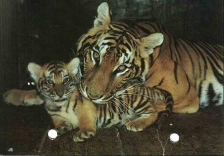

ЖАРКОЕ ЛЕТО 91-го
Оно выдалось жарким не только по шкале Цельсия, но и по шкале политических страстей. Это был, пожалуй, пик моей политической активности. Я с трудом делил время между общественно-политическими партиями и движениями, в руководящие органы которых я входил (Партия экономической свободы, Демроссия и избирательный блок «Демократический выбор», Союз «Офицеры за демократию»), многочисленными представителями СМИ и самими СМИ, дачей и семьей, которой доставалось менее всего времени.
Слава Богу, домашние всячески поддерживали меня, хотя и боялись за мою жизнь, т.к. уже шел активный отстрел демократических лидеров.
Была в разгаре предвыборная кампания кандидата в первые Президенты России. Ни у кого не вызывало сомнений, что им станет Б.Н.Ельцин, авторитет которого у россиян был абсолютным. Всем осточертело бесконечное словоблудие М.С.Горбачева, его непоследовательность и нерешительность, бессилие Советов сверху донизу в сочетании с бесконтрольностью КГБ, пустыми полками в магазинах и заоблачными ценами на рынках.
1 июня 1991 года в кинотеатре «Октябрь», что на проспекте Калинина (ныне – Новый Арбат), состоялось последнее предвыборное собрание в поддержку Ельцина. Я с женой получил на него приглашение. И в качестве такового была использована любопытная открытка с текстом на обороте:

И все же в здание кинотеатра было бы не пробиться, если бы не четкая организация со стороны Демроссии и Демвыбора при активной поддержке ветеранов Вооруженных Сил.
Было заранее оговорено с руководством этих организаций, что я на собрании выступлю от имени военных в поддержку Бориса Николаевича. Поэтому меня встречали на подходе к кинотеатру и провели на заранее забронированные в зале места.
Более того, ведущий функционер Демроссии Владимир Боксер (по профессии – врач и сын известного тогда в Москве детского врача), предвидя, что выступление с трибуны может не получится, заранее организовал у единственного микрофона в зале очередь из «демороссов», для того, чтобы обеспечить мне первое место у микрофона.
Так оно и получилось: после длительного выступления Ельцина трибуну получили вожди местного значения, а после них предложили желающим выступить от микрофона в зале в течение 5 минут.
Мое выступление было написано и четко рассчитано на 5 минут. Я, разумеется, был в форме.
Когда я подошел к микрофону, цепочка демороссов раскинулась вокруг меня, как бы охраняя мою безопасность и я без помех произнес свою воистину историческую речь, которую напечатали все газеты демократического толка, а мои единомышленники ее, кроме того, задокументировали. Вот этот документ:

Стоит ли говорить о впечатлении, которое мое заявление произвело на аудиторию?! Во всяком случае сам кандидат в президенты слушал его не только внимательно, но и с явным удивлением на лице.
А вскоре состоялось во Дворце Съездов инаугурация Президента, куда мы с женой конечно-же были приглашены. На ней вместе с Ельциным был первый мэр Москвы Г.Х.Попов. Присутствовал и благословлял и Патриарх Всея Руси.
Когда окончилась официальная часть, народ стал медленно выходить, а наиболее догадливые бросились к парадному подъезду, чтобы приветствовать Ельцина и Попова.
Мы сделали то же, но вскоре заметили у лицевого бордюра одинокую «Волгу» со священником у дверцы. Мы поняли, что это патриарший экипаж и бегом бросились туда. Алексий II вскоре вышел и мы были удостоены его благословения с рукопожатием.
Вот на такой высокой ноте закончились для нас с женой выборы Первого Президента России.